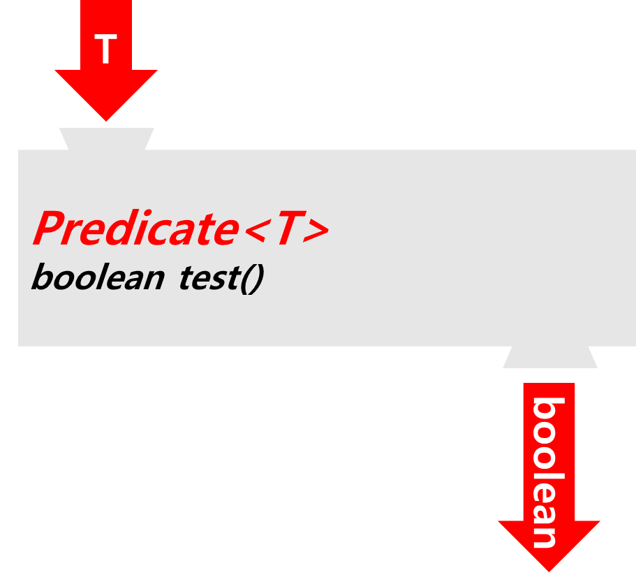
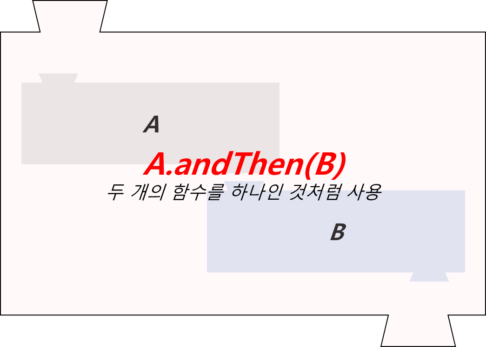
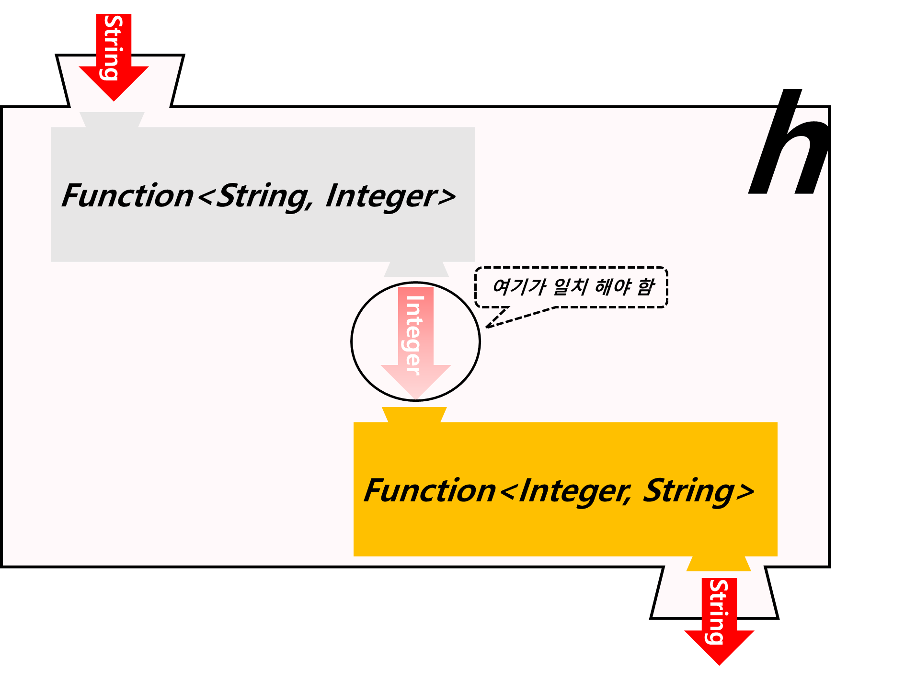
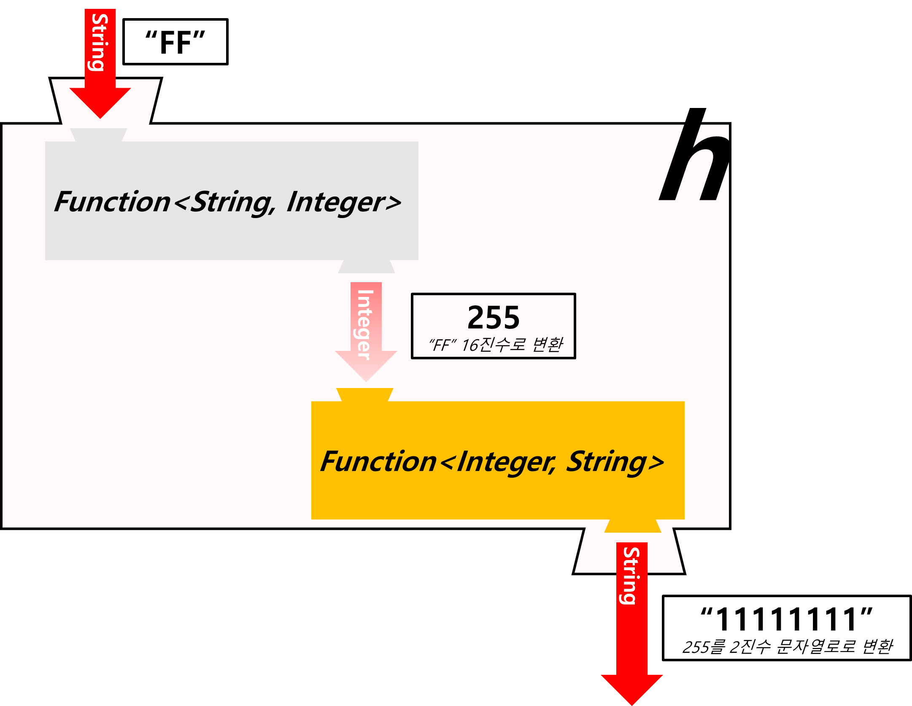

Ch14-9~12. Predicate
0. 목차
Chapter14. 람다와 스트림
Ch14 - 9. Predicate의 결합
Ch14 - 10. Predicate의 결합 예제
Ch14 - 11. 컬렉션 프레임웍과 함수형 인터페이스
Ch14 - 12. 컬렉션 프레임웍과 함수형 인터페이스 예제
Ch14 - 1. Predicate의 결합
▶ Predicate란?
▷ 조건식
Predicate<T>:-T→ boolean test{T t} → boolean

▷ and(), or(), negate()로 두 Predicate를 하나로 결합’
and():&&or():||negate():!
▷ Predicate = 함수형 인터페이스 : 인터페이스가 가질 수 있는 메서드
default 메서드static 메서드추상 메서드
Predicate<Integer> p = i -> i < 100;p Predicate<Integer> q = i -> i < 200;p Predicate<Integer> r = i -> i % 2 == 0; // ↓↓↓↓ Predicate를 하나로 결합 시키면? ↓↓↓↓ Predicate<Integer> notP = p.negate(); // !p = !(i < 100) = i >= 100 Predicate<Integer> all = notP.and(q).or(r); // 100 <= i && i < 200 || i % 2 == 0 Predicate<Integer> all2 = notP.and(q.or(r)); // 100 <= i && (i < 200 || i % 2 == 0) // ↓↓↓↓ 사용 ↓↓↓↓ System.out.println(all.test(2)); // true, Predicate에 있는 test 사용 System.out.println(all2.test(2)); // false, Predicate에 있는 test 사용
▷ 등가 비교 Predicate는 static 메서드인 isEqual() 사용
Predicate<String> p = Predicate.isEqual(str1); // isEqual()은 static 메서드
Boolean result = p.test(str2); // str1와 str2가 같은가? → 같으면 true, 다르면 false 반환
// ↓↓↓↓ 한 줄로 ↓↓↓↓
boolean result = Predicate.isEqual(str1).test(str2);
Ch14 - 2. Predicate의 결합 예제
▶ andThen
▷ 두 개의 함수를 하나인 것처럼 사용

▷ 예시
Function<String, Integer> f = (s) -> Integer.parseInt(s, 16);
Function<Integer, String> g = (i) -> Integer.toBinaryString(i);
Function<String, String> h = f.andThen(g);

▷ h 사용
System.out.println(h.apply("FF")); // "FF" → 255 → "11111111"

▶ 항등 함수(identity function)
▷ 입력된 그대로 출력되는 함수
Function<String, String> f2 = x -> x; // 항등 함수(identity function)
System.out.println(f2.apply("AAA")); // AAA가 그대로 출력
▶ isEqual()
▷ 주소 비교X, 내용 비교O
String str1 = "abc";
String str2 = "abc";
// str1과 str2가 같은지 비교한 결과를 반환
Predicate<String> p2 = Predicate.isEqual(str1);
boolean result = p2.test(str2);
System.out.println(result);
// true
String str1 = new String ("abc");
String str2 = new String ("abc");
Predicate<String> p2 = Predicate.isEqual(str1);
boolean result = p2.test(str2);
System.out.println(result);
// true
String str1 = "abc";
String str2 = new String ("abc");
Predicate<String> p2 = Predicate.isEqual(str1);
boolean result = p2.test(str2);
System.out.println(result);
// true
String str1 = "abcdefg";
String str2 = new String ("abc");
Predicate<String> p2 = Predicate.isEqual(str1);
boolean result = p2.test(str2);
System.out.println(result);
// false
Ch14 - 3. 컬렉션 프레임웍과 함수형 인터페이스
▶ 컬렉션 프레임웍이란?
▷ JDK1.8 부터 함수형 인터페이스가 들어오면서 컬렉션 프레임웍에도 변화가 있었음
▷ 람다식을 이용한 작업을 쉽게하는 메서드들이 추가 됨
▶ 함수형 인터페이스를 사용하는 컬렉션 프레임웍 메서드
▶ 와일드 카드 생략
▷ 인터페이스 : Collection
▷ 메서드 : boolean removelf(Predicate<E> fillter)
- 조건에 맞는 요소를 삭제
▷ 인터페이스 : List
▷ 메서드 : void replaceAll(UnaryOperator<E> operator)
- 모든 요소를 변환하여 대체
▷ 인터페이스 : Iterable
▷ 메서드 : void forEach(Consumer<T> action)
- 모든 요소에 작업 action을 수행
▷ 인터페이스 : Map
▷ 메서드 : V compute(K key, BiFunction<K, V, V> f)
- 지정 된 키의 값에 작업 f를 수행
▷ 메서드 : V computeIfAbsent(K key, BiFunction<K, V> f)
- 지정 된 키가 없으면, 작업 f 수행 후 추가
▷ 메서드 : V computeIfPresent(K key, BiFunction<K, V, V> f)
- 지정 된 키가 있으면, 작업 f 수행
▷ 메서드 : V merge(K key, V value, BiFunction<V, V, V> f)
- 모든 요소에 작업 action을 수행
▷ 메서드 : void forEach(BiFunction<K, V> action)
- 모든 요소에 작업 action을 수행
▷ 메서드 : void replaceAll(BiFunction<K, V, V> f)
- 모든 요소에 치환 작업 f를 수행
Ch14 - 4. 컬렉션 프레임웍과 함수형 인터페이스 예제
▶ list의 모든 요소를 출력
▷ forEach()
ArrayList<Integer> list = new ArrayList<>();
for(int i=0;i<10;i++)
list.add(i);
list.forEach(i->System.out.print(i + ","));
// console
0,1,2,3,4,5,6,7,8,9,
▶ list에서 2 또는 3의 배수를 제거
▷ removeIf(), replaceAll()
list.removeIf(x -> x % 2 == 0 || x % 3 == 0);
System.out.println(list);
// console
[1, 5, 7]
▶ list의 각 요소에 10을 곱셈
▷ replaceAll()
list.replaceAll(i -> i * 10);
System.out.println(list);
// console
[10, 50, 70]
▶ map의 모든 요소를 {k,v}의 형식으로 출력
▷ forEach()
Map<String, String> map = new HashMap<>();
map.put("1", "1");
map.put("2", "2");
map.put("3", "3");
map.put("4", "4");
map.forEach((k,v)-> System.out.print("{" + k + "," + v + "},"));
System.out.println();
// console
{1,1},{2,2},{3,3},{4,4},
▶ E = mc²
▷ Error = (more code)²
- 람다식 사용X = more code = Error 확률 제곱↑
// 람다식 사용X Iterator it = list.iterator(); while(it.hasNext()) { System.out.println(it.next()); } // console 0 1 2 3 4 5 6 7 8 9 - 람다식 사용O = code 간소화 = Error 확률↓
// 람다식 사용O list.forEach(i->System.out.print(i + ",")); // console 0,1,2,3,4,5,6,7,8,9,